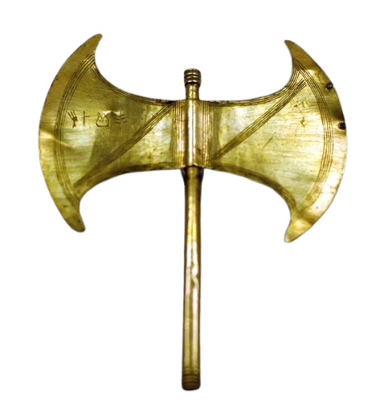

Grupo de Acompanhamento Filosófico
O objetivo central desta formação é transformar conceitos em percepções, e essas, em vivências. Inspirados na figura do herói Teseu, buscamos o abandono de uma visão centrada apenas no próprio núcleo em direção a uma percepção mais ampla da humanidade [1].
O símbolo do machado de duplo fio representa a abertura de caminhos para dentro (transformação de si) e para fora (ação no mundo) [2].
Foco na superação e no reconhecimento de problemas como provas internas [3].
#280 – O Heroísmo #172 – Triunfar na Vida #282 – O Herói e seus Companheiros #109 – A Experiência PessoalConhecer a mensagem filosófica e a importância do serviço voluntário [3].
#410 – Nova Acrópole #251 – Voluntariado #125 – Transmitir o Ideal #184 – Trabalhar para o FuturoA força da vontade e a capacidade de decisão como leis de vida [3].
#349 – Desejos e Vontade #279 – O Trabalho #239 – Barreiras da Ação #212 – A AçãoDesenvolver a cortesia e a união sobre o que nos separa [3].
#131 – Cortesia Acropolitana #361 – Boa Comunicação #161 – Confraternidade #206 – IrmandadeA mentoria não se resume a leituras. Cada encontro foca em uma Prática de Psicologia e um Desafio Bimestral [6].